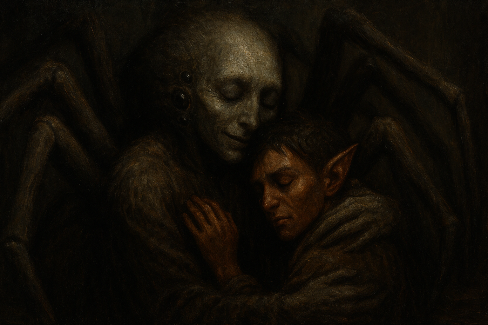

Chapter 2: Mother Reborn
Lurking Dangers

Lurking Dangers
15048.12.04
Lott 提議應該要去見一下母親大人，於是他便帶著大家來到母親大人的神殿。
黑暗之中，Lott 跪下，祈求母親大人治療他重傷的肩膀。在母親大人的觸碰下，Lott 瞬間痊癒。喜極而泣的他，馬上決定加入蜘蛛神教，在母親大人的輕咬下，他知道母親大人完美的填補了他從小便沒有的的父母的位置。
母親大人也看向 Paladin，感受到了他加入蜘蛛神教的事。然而，一個瞬間，母親大人突然像是癱軟了一樣，八隻腳撐著的身體重重摔在床上。Tweeter 直覺式的睜開他的第三隻眼，看見一股能量在空中竄啊竄，然後直直射入母親大人的體內。母親大人再度站起，但整個氛圍感覺不太一樣，或者應該說，不太對勁。
「謝謝你啊，Paladin。」重生的母親大人對著 Paladin 説，但比起母親大人，他聽起來……更像是 Anna 的聲音。「你的任務已經完成了。」
語畢，母親大人的腳快速地朝著 Paladin 的脖子伸去。戰鬥一觸即發，冒險者們在逃跑與攻擊之間難以抉擇。Tweeter 看見母親大人的靈魂在他被奪走的軀體與 Paladin 之間竄動，大喊了一聲，要靈魂鑽進 Paladin 的體內。靈魂快速竄入 Paladin 倒在地上的體內，這時他的肚子突然破開，八隻蜘蛛的腳破體而出，將他仰躺的身體從地面撐起，Paladin 的臉望著天花板，頭殼裂了開來，成了蜘蛛的嘴。然後這副軀體便飛快的朝著神殿之外飛奔而出。Lott 追了上去，比起夥伴的死亡，母親大人的失勢對他來說打擊更大。他嘗試追上蜘蛛，詢問他今後該怎麼辦？是否還有機會見到祂？Lott 的腦中浮現了母親大人的聲音：「不是是否會見到，而是何時會見到。」然後蜘蛛便消失了蹤影。
房間內，被 Anna 奪走軀體的母親大人逐漸向後退去，伸出後腳，朝牆上的印記按了一下，然後就被傳送走了。Tweeter 和華生決定到床頭探索，但也同時發現 Mango 不見了。
牆上的印記和之前見過的相同，Lott 向前檢視，這印記他從小在貧民窟看過不少次，相同的形式，但多多少少有差異。Tweeter 也感受到這應該附著有傳送魔法。印記旁是過去母親大人退回的洞穴。華生決定先前往洞穴內探索，要 Tweeter 和 Lott 先在洞外等他。
洞穴內毫無聲響，像是被下了魔法般的寂靜。走了好久，華生突然發現自己似乎踩到了一個陷阱。仔細觀察，「陷阱」像是一個按鈕，他輕輕把腳抬起，發現按鈕逐漸提升，無數隻的小蜘蛛從像是水管的通道爬了出來（水管的材質像是蜘蛛絲做成的，十分堅硬。），沒有目的的四處亂竄。華生對此感到十分困惑，在穴壁上做了個記號，然後就繼續前進了。
等了十分鐘，Tweeter 和 Lott 決定也進到洞穴內探索。他們看見了華生留下的記號，以及突出的陷阱。
華生繼續向前走，最終走到了盡頭。洞穴的底端是個佈滿陷阱，多到足以觸發密集恐懼症的半球形凹槽。此時華生已經不再刻意避開陷阱了，地上滿是爬出來的小蜘蛛。華生採集了一些蜘蛛，便決定回頭走。
停留下來的 Tweeter 和 Lott 也採集了一些蜘蛛—活的，以及被踩死的。其中還有一些是看起來活動不太順暢的個體。Tweeter 將看起來怪怪的蜘蛛用小刀剖開，發現不但沒有流出任何體液，這些小蜘蛛體內甚至比起組織，更像機械。他拿起正常的蜘蛛，剖開，發現裡頭也是機械。Tweeter 膽大地將一隻小蜘蛛放在掌心，手掌傳來一陣刺痛，他的掌中心多了一個洞，肉眼看過去是透的，卻沒有留任何血。此時與他們會合的華生也見到了這樣的狀況。然而洞穴內無法說話，於是三人決定回到神殿去。
Tweeter 將自己的發現分享給華生。三人決定去詢問 Dr. David，同時也將他們說好要還他的錢交給他。如果情況允許，也許也能見見他的弟弟，半神 Dennis。
因為不知道 Dr. David 私下的住處，三人只好先前往原本診所的廢墟。第一次見到這裡的 Lott 滿臉吃驚。Tweeter 找了附近的路人，得知 Dr. David 的住處就在附近，於是三人便趨身前往。
管家將大門打開，三人踏入 Dr. David 家的大廳，Dr. David 不久後便從二樓下來。他得知 Paladin 的慘況後，因為 Paladin 是名有領地的爵士，趕緊叫管家去通知王室，準備為他舉行國葬。在華生和 Tweeter 和 Dr. David 還錢的過程中，Lott 偷偷溜上二樓，卻在二樓樓梯上看見了一個滿臉驚恐的人，喊著 Lott 是深淵來的。Lott 滿臉困惑，然後得知這是 Dr. David 的弟弟，自稱是半神的 Dennis。他的偷竊計畫泡湯。Dr. David 將他的弟弟帶了下來，同時 Lott 也趕緊闡明自己只是從來沒進來過這麼大的房子，很好奇，所以才到處亂跑。
Dr. David 檢查了 Tweeter 的傷口，也看了他們帶回來的蜘蛛，覺得好奇，但也完全沒有頭緒。冒險者們決定給 Dennis 一個機會，畢竟完全沒有任何頭緒。Dennis 看了看，提出一個說法：Tweeter 的手被下了傳送魔法，他掌心的那一塊肉被傳送到其他地方去了。這話雖然聽起來十分荒唐，但又有一定程度的可能性。華生嘗試讀取 Dennis 的大腦，Dennis 似乎在過去被抓到深淵去時，有見過類似的事。為了博取 Dennis 的信任，華生也自稱是半神，而 Dennis 也不假思索地相信他。出於好奇，他們也問了 Dennis 究竟是什麼宗教信仰的半神？Dennis 則表示自己是「宇宙神」的半神。雖然對這神祇沒有概念，但因為說話的人是 Dennis，冒險者也沒有什麼多想了。
三人與 Dr. David 兄弟告別，決定去一趟小黑屋。華生在小黑屋門口等待，Tweeter 和 Lott 準備下樓去，他們卻撞見了一名穿著斗篷，只露出下半臉的人，從樓梯走了上來。這是他們第一次在小黑屋見到另一名活人。Tweeter 看了看那人，發現竟然是個他想不到還存在的人—那人的臉，和他前陣子看見了王宮大學士 Ishton 長得一模一樣。Tweeter 將第三隻眼睜開，想一探究竟，沒想到這人一看見他的第三隻眼，便跪了下來，表示自己奉月神之命，無條件服從 Tweeter—有第三隻眼的他，地位非凡。Tweeter 和他詢問為何 Ishton 已死，他的軀體卻在這裡活動？這人表示月神讓他借用了 Ishton 的身體，但裡面的靈魂是不同的。他告訴 Tweeter 需要他的時候，在心中默念他的名字—Sham，他便會盡可能地快速趕來。語畢，他便離開了。
來到地下室，Tweeter 和 Lott 向他們知道批在斗篷底下的陶瓷 Roline 詢問了一些問題，得知 Tweeter 掌心的肉被傳送到了麥克嵩的地下水道，同時也是蜘蛛神教的聚集場所；母親大人正朝著妖精王國內蜘蛛神教的發源地跑去；Lott 詢問了自己的身世，了解到自己的父母：兩名魔人，當年偷偷潛入麥克嵩，將他拋棄在貧民窟後便逃走了，同時他也得知自己體內有魅魔的血統，如果要學習使用魅魔的力量，要練習拋棄理智，遵從本能。
離開小黑屋後，三人一起走回 Marcus 家去。Marianne 前來應門，發現他們又少了人，表示要是 Marcus 知道，他一定會氣瘋的。等 Marcus 從樓上下來，大家便先用晚餐。Lott 詢問了他的師父伊的狀況，Marianne 表示伊還在昏迷中，狀況並不好。
餐桌上，Marcus 的表情十分凝重，甚至他的餐盤一動也不動。他嘆了口氣，表示自己警告過大家要趕快離開麥克嵩，否則明天餐桌上不知道會不會又再少一人？華生提到有聽說之前在瑟巴諾，他、Tweeter、Sugalu 和 Inu 被殺死後再製而成的泥人，似乎正在前往麥克嵩的路途中，要是他們抵達了麥克嵩，肯定不會有好事，因此希望可以把他們除掉後，再啟程離開。同時，Lott 也提到他想去找母親大人，這也得到了 Marianne 的認可，因此大家計劃在解決完泥人的問題後，便出發前往妖精王國。然而，沒有人懂妖精語，因此在華生的說服下，Marcus 決定和他在妖精王國的線人聯繫。
飯吃到一半，Lott 看見窗外突然出現了一道亮光，然後一個看起來搞不清楚狀況的傢伙出現在窗前，那人意外的眼熟。是他們今天在地道遇見的那名地侏，Mango。Lott 趕緊和他揮手，並告訴 Marcus 這件事。Marcus 判斷這人也是他們的同伴，於是便到門口應門。
晚餐後，Tweeter 和 Lott 去二樓的貴賓室就寢，而華生和 Mango 則在 Marianne 的招待下，暫時住在他的房間。Marianne 則因為要照顧伊，這幾天都在伊的房間休息。
睡夢中，Lott 感到無比的孤單。他分不清夢境與真實，只是想起自己被父母拋棄的事，就覺得難受。無盡的黑暗中，彷彿一切都是空的。他的手一伸，觸碰到了一個毛毛的東西。身體湊近，一股熟悉的味道。他突然感受到了一種他不曾擁有過的感覺，叫歸屬感。